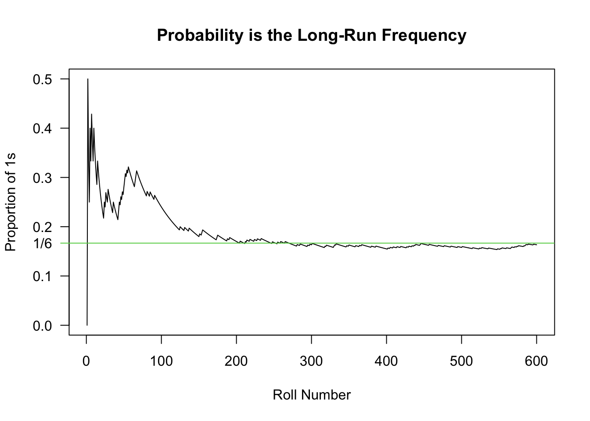
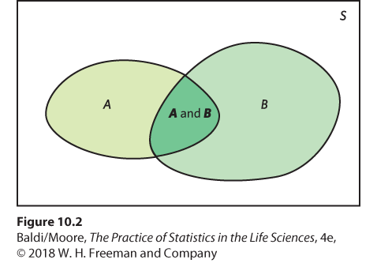

5 Probability Background
Please pay attention to the margin notes.1 They often contain important information.2
These notes are based on Chapter 9 in Baldi & Moore (4th edition). Chapter 2 of OpenIntro Biostatics is also a great (free) resource.
5.1 Defining Probability with Dice
I find that the easiest way is to build this up by examples. Let’s start with rolling a dice.3 Let’s say you rolled the dice, and you got a 3. This is called a simple event. The collection of all simple events is called the Sample Space, which in this case is \(\mathcal S\)={1,2,3,4,5,6}.
Now, suppose that you’re about to roll a dice. You might be curious about whether it’s a 1, 2, 3, 4, 5, or a 6, but you might only care about the event that the outcome is even. Since there are multiple simple events that make up this event, it is called a compound event.
There’s no way for you to know what’s going to happen, but you know all of the possibilities and you know how likely they all are.4 This is called a Probability Model: The sample space along with the probability of all of the events.
I said “the probability of all events”, but this is more complicated than it may seem and requires some explanation. For something like rolling a dice, you only need to know the probability of each simple event. Compound events, like the probability that the outcome is even, can be determined from these simple events.
Suppose you’re playing a game where, if the outcome of the dice is less than a certain cutoff value you get to roll again (e.g., your character has a special ability that allows re-rolling of dice, but the re-roll condition depends on the situation). You know the probability of all of the simple events, but you need to know the cutoff value to actually compute any probabilities. Without the cutoff value, you cannot define the probability model.
For a dice, the probability model is simply: Each number has a probability of 1 in 6. But what does this mean? There are two perspectives on what a “probability” is: The Frequentist approach and the Bayesian approach. In this class we’re only going to learn the Frequentist definition of probability, but if you’re interested in learning more I’m happy to talk.5
Probability (Frequentist Definition): The long run frequency of observing an event. In other words, it’s the number of times an event is observed divided by the number of trials after doing a near-infinite number of trials.
For the dice, if we rolled the dice 60 times, we would expect 10 of those rolls to be a 1, 10 of them to be a 2, etc. Due to randomness, we won’t get exactly that, but this is what we would expect. If we rolled 600 dice, we would expect 100 to be 1, etc. As we roll more dice, we get closer to the proportion of 1/6. The plot below this demonstrates this - it is the number of times that a dice was 1 divided by the number of trials, with the number of trials being increased. Notice how it takes a while for the “empirical” probability to reach the theoretical probably; as the number of trials approaches infinity, the proportion of rolls that showed a 1 will approach 1/6.
5.2 Calculating Probability with Dice
First, let’s introduce some notation. I will use P(x) to mean “The probability of x”. In some cases, the context will be clear, such as:
- “The probability of rolling a 1” = P(1)
- “The probability of rolling an even number” = P(even)
- “The probability of not rolling a 1” = 1 - P(1)6
For this section, we’ll assume that P(1)=P(2)=P(3)=P(4)=P(5)=P(6)=1/6.7
“Or”
What’s the probability that we roll an even number? The even numbers are 2, 4, and 6, so what we’re really asking is “What’s the probability that we roll a 2, 4, or a 6?” In this case, the probability is P(2 or 4 or 6) = P(2)+P(4)+P(6) = 1/6 + 1/6 + 1/6 = 3/6 = 0.5.
We also could have figured out this probability by noting that half of the values are even, so a probability of 0.5 makes sense. It’s a good thing when our intuition matches our answer, as we’ll see next.
Let’s consider the probability that the dice is even^ (which we will denote P(even)) or it’s strictly larger than 3 (denoted P(>3)). This means the dice is either 2, 4, or 6, or it’s 4, 5, 6. Since there are 4 different numbers (2, 4, 5, and 6) that would match the criteria, the probability is 4/6. Let’s use our “or” rules to verify this!
The probability that the dice is even is 1/2. The probabilty that the dice is larger than 3 is also 1/2. So, obviously, P(even or >3) = P(even) + P(>3) = 1/2 + 1/2 = 1.
Wait.
That can’t be right.
I think you may be able to see what went wrong. The P(even) = P(2) + P(4) + P(6), and P(>3) = P(4) + P(5) + P(6). When we did P(even) + P(>3), we added P(4) and P(6) twice! To get the right answer, we need to fix this. Since we added them twice, we must subtract them once. This brings us to…
The Addition Rule for “or”
For any two events A and B,8 the Addition Rule states:
\[\begin{align}P(A\; or\; B) = P(A) + P(B) - P(A\; and\; B).\end{align}\]
First, note that the probability of both events is P(Even and >3) = P(4) + P(6), since 4 and 6 are both even and larger than 3.
\[\begin{align*} P(Even\; or\; >3) & = P(Even) + P(>3) - P(Even\; and\; >3)\\ & = [P(2) + P(4) + P(6)] + [P(4) + P(5) + P(6)] - [P(4) + P(6)]\\ & = P(2) + P(4) + P(5) + P(6)\\ & = 1/6 + 1/6 + 1/6 + 1/6\\ & = 4/6 \end{align*}\]
“and”: Part 1
The word “and” came up in the addition rule, and so I should give a good definition of “and”. When we talk about events A and B, P(A and B) refers to the probability that they both happen together. It’s most helpful to see this as a Venn diagram:

P(A) is the area of the circle labelled A, P(B) is the area of the circle labelled B, and P(A and B) is the area of the overlap between these two circles. P(A or B) is the total shaded area, including the yellow-green, green, and dark green.
You can see the Addition Rule at work here. If you add the area of A (which includes P(A and B)) to the area of B (which also includes P(A and B)), you’ve added P(A and B) twice!
There are two formulas for P(A and B). The first one is found by rearranging the formula for P(A or B):
\[\begin{align*} \small P(A\; or\; B) &\small = P(A) + P(B) - P(A \;and\; B)\\ \small P(A\; and\; B) &\small = P(A) + P(B) - P(A \;or\; B) \end{align*}\]
When in doubt, just remember P(A_B) = P(A) + P(B) - P(A_B), then put “or” in one blank and “and” in the other.
This formula won’t always get you to the solution, though. There will be many times where neither “and” nor “or” will be obvious, and we’ll need to do some more work to get them. We have special formulas for “and”, so we’ll usually try to figure out the “and” and then use it to figure out the “or”9.
“given”: Conditional Probabilities
A condition is something that must happen before you can proceed. A conditional probability is a probability that requires something else to happen, and usually involves a more complicated setup.
Let’s look at another scenario. Let’s say I told you that the number on the dice was larger than 3. What’s the probability that the number on the dice is a 4? Intuiutively, it’s 1/3, since there are 3 possible numbers. Our notation fails us here, P(4) denotes the probability that the dice is a 4, which we already determined was 1/6. We can’t use P(4) for two things, so we need to add some notation.
In this case, the solution is to use a vertical bar, “|”, which is pronounced “given”. We write “P(dice is 4 | dice is greater than 3) = 1/3”,10 which is read as “The probability that the dice is 4, given that the dice is larger than 3.”
A very important thing happened here: when we used a conditional probability (“given that”), we restricted the sample space. When we “condition” on an event, it means that we’re only looking at cases where that event happened. “The probability that the dice is 4, given that the dice is larger than 3” is another way of saying that we’re only considering events where the dice roll is greater than 3; we don’t care about 1, 2, or 3.
We defined “probability” as the total number of events divided by the total number of trials. For conditional probabilities, this means that we’re only looking at some of the trials.
\[\begin{align*} \small P(dice\; is\; 4\; |\; dice\; is >3) = \frac{\#\; ways\;dice\;can\;be\;4\;}{\#\;ways\;dice\;can\;be\;>3}=\frac{1}{3} \end{align*}\]
This formula is incorrect: “The number of ways that a dice can be 4” depends on the condition. For instance, the number of ways that a dice can be 2 is 0 since we’re told it’s larger than 3. We are actually looking at the number of ways that the dice can be both 4 and greater than 3. Let’s incorporate this information:
\[\begin{align*} \small P(dice\; is\; 4\; |\; dice\; is >3) = \frac{\#\; ways\;dice\;can\;be\;4\;\;and\;>3}{\#\;ways\;dice\;can\;be\;>3}=\frac{1}{3} \end{align*}\]
For any two events A and B, conditional probabilities are defined as follows:11
\[\begin{align*} \small P(A | B) = \frac{P(A\;and\; B)}{P(B)} \end{align*}\]
The equation above is a definition. It’s not the result of something else, it’s the way we define conditional probability. Rearranging it, though, gives us an important result.
“and” Part 2: The Multiplication Rule
For any two events A and B, the Multiplication Rule states:
\[\begin{align*} \small P(A\; and\; B) = P(A|B)P(B) \end{align*}\]
Note that P(B|A) = P(A and B)/P(A), so the multiplication rule can be extended:
\[\begin{align*} \small P(A\; and\; B) &\small = P(A|B)P(B)\\ \small P(A\; and\; B) &\small = P(B|A)P(A) \end{align*}\]
In other words, you can write it either way as long as the event that comes after the “|” also appears on it’s own.
Let’s use this to answer the following question: What’s the probability that a dice is larger than 3 and even? By intuition, this should be 2/6 since there are two cases where both are true, but let’s verify with math!
First, recall that P(>3) and P(even) are both 1/2.
P(>3 | even) means that we’re look at the number of dice rolls that are larger than 3, but we’re only considering even dice rolls. We have 3 total dice rolls that are even, and 2 of those are larger than 3, so this probability is 2/3. Using the multiplication rule, P(>3 and even) = P(>3 | even)*P(even) = (2/3)*(1/2) = 2/6, which is what we got before!
The other way works out the same. Given that the roll is larger than 3, there are 2 even rolls, which means that P(even | >3) = 2/3. P(>3 and even) = P(even | >3)*P(even) = (2/3)*(1/2) = 2/6, which is what we got before!
Special Cases: Independent or Disjoint
Disjoint, a.k.a. Mutually Exclusive
Disjoint events, also called mutually exclusive events, are events that cannot occur together. For example, the event that you roll a 4 and it’s also a 3. This simply does not work, so the probability is 0.
More formally, A and B are disjoint if P(A and B) = 0.
The Addition Rule for Disjoint Events
If A and B are disjoint, then P(A or B) = P(A) + P(B).12
This is actually why we were able to say P(even) = P(2 or 4 or 6) = P(2) + P(4) + P(6) = 3/6: the events “2”, “4”, and “6” are disjoint.
Independent
Two events are independent if the knowledge of one event tells you nothing about the other.13 For instance, if I flip two different coins and tell you that the first one was Heads, you still only have a 50/50 chance of guessing the second one.
Notice the phrasing in the previous sentence: “If I tell you that the first one is heads…” That is, I’m restricting the sample space. Independence is all about conditional probabilities!
Formally, A and B are independent if P(A | B) = P(A).
This adds further insight into conditional probabilities: P(A|B) is how likely A is, given that you know B happened. Knowledge of B changes your guess of the likelihood of A. If it doesn’t change your guess, then they are independent.14
The following app demonstrates this concept:
Another lesson to take from the app above: Independence doesn’t look special. You can’t just tell that things are independent by looking at them.
The Multiplication Rule for Independent Events
Any time I see a conditional probability, I immediately write down the formula. For dependence, we are saying:
P(A|B) = P(A and B)/P(B)
which is the same as
P(A and B) = P(A|B)P(B)15
If two events are independent, then P(A|B)=P(A), therefore:
P(A and B) \(\stackrel{indep}{=}\) P(A)*P(B)16
Get this tattood backwards on your forehead so you see it every time you look at yourself in the mirror: P(A and B) is ONLY equal to P(A)*P(B) when A and B are independent!!! Some textbooks start with this rule then move to the general rule, but far too many students start using P(A and B) = P(A)P(B) as if it’s always true. My entire thesis is based on whether you can say two things are independent, so it’s kind of a sore spot for me. DO NOT MIX THIS UP.
For example, are the events “even” and “>3” independent? If you know that the dice roll is >3, then there’s a 2/3 chance that it’s even. That is, P(even|>3) = 2/3 \(\ne\) 1/2 = P(even), so it’s not independent.
Alternatively, we can calcuate P(even and >3) = 2/3, but P(even)*P(>3) = (1/2)*(1/2) = 1/4. Since 2/3 \(\ne\) 1/4, these events are not independent.
Disjoint means Dependent
Independence can be defined as “if you know that one event happened, you have no knowledge of the other event.” Disjoint can be defined as “if you know one event happened, you know for sure that the other one did not happen.” If two events are disjoint, they must be dependent. In fact, knowledge of one event means that you for sure know about the other - the exact opposite of independence!
… except when one event is impossible. For instance, P(even and 7) = 0 since there are no dice rolls that are both even and 7, but this is also equal to P(even)*P(7) = 0 since there are no dice rolls that are 7.
5.3 Word Problems
Question 10.6 from the textbook:17
The National Survey on Drug Use and Health reports that 18.1% of all adults in the United States had a mental illness in 2014. Among adults with a substance use disorder, 39.1% had a mental illness. By comparison, only 16.2% of adults without a substance use disorder had a mental illness. The report also states that 3.3% of American adults had both a mental illness and a substance use disorder. Use the notation MI and SUD for mental illness and substance abuse disorder, respectively.
- Express the four percents cited here as probabilities for a randomly selected American adult. Use proper probability notation.
- Obtain the probability P(SUD|MI). Write a sentence reporting this probability in context.
Solutions:
- There are a couple of probabilities:
- “18.1% of all adults in the United States had a mental illness”: P(MI) = 18.1
- “Among adults with a substance use disorder, 39.1% had a mental illness.” The part that says “among adults with SUD” means that we’re only looking at people with SUD; we’re restricting the sample space. This is a condition, so our answer must be P(_ | SUD) = __. The blanks can be filled in as P(MI|SUD) = 0.391.
- “16.2% of adults without a substance use disorder had a mental illness.” The part that says “adults without a SUD” is also restricting the sample space, so our probability statement will be P(__ | no SUD) = __. The blanks are filled in as P(MI | no SUD) = 0.162.18
- “3.3% of American adults had both a MI and a SUD”. This clearly states and, so we are looking at P(MI and SUD) = 0.033
Part b. is going to take a few steps. Let’s write down all the formulas that might help. Firstly. there’s no “or”, so that probably won’t do it.
- Want: P(SUD|MI)
- P(SUD|MI) = P(SUD and MI)/P(MI), so we need P(SUD and MI) and P(MI).
- Have:
- P(MI) = 0.181
- P(MI | SUD) = 0.391
- P(MI | no SUD) = 0.162
- P(MI and SUD) = 0.033
Both P(SUD and MI) and P(MI) are given in the question, so our answer is simply:
P(SUD | MI) = P(SUD and MI)/P(MI) = 0.033/0.181 = 0.1823
Therefore 18.23% of people with mental illness have substance abuse disorder.
Compare this value to P(MI | SUD) = 0.391. In general, there is no easy relationship between P(A | B) and P(B | A). If you know what P(A | B) is, you can’t really guess at what P(B | A) is; you need a lot more information!
5.4 Two-Way Tables
I rigorously collected the following data19 on programming language usage for different disciplines using the most appropriate sampling methods.
| Stats | Math | Comp Sci | Total | |
|---|---|---|---|---|
| R | 90 | 30 | 40 | 160 |
| Python | 10 | 60 | 100 | 170 |
| MatLab | 15 | 60 | 15 | 90 |
| Julia | 10 | 10 | 1 | 21 |
| Total | 125 | 160 | 156 | 431 |
From this table, we can calculate marginal and conditional probabilities.
Marginal probabilities are calculated from the margins, which means that we ignore one of the variables. For example, P(Math) = 160/431 and P(Julia) = 21/431. Both of these proportions are based on the margins - they don’t take the other variable into account.
Conditional probabilities are the same idea as we saw earlier. Again, we are restricting our sample space by conditioning on another variable. For example, P(R | Stats) = 90/125, whereas P(Stats | R) = 90/160. The conditioning event determines which row/column we use. When we condition on Stats, we only look at the column labelled stats - we do not consider any of the other numbers. This is why P(R | Stats) has a numerator of 125, rather than 431.
You should be familiar with the following calculations:
- P(Stats) = 125/431
- P(Stats | Julia) = 10/21
- P(Matlab | Comp Sci) = ???20
- P(Stats and Julia) = 10/431
- P(Matlab and Stats) = 15/431
- P(Stats or Julia) = P(Stats) + P(Julia) - P(Stats and Julia) = 136/431
- P(Matlab or Stats) = 200
- P(Stats or R) = ???
- P(Stats or Math) = ??
Two-way tables can also be created in R using the table() function:
data(mtcars) # It's a very useful dataset
cbind(mtcars$am, mtcars$cyl) # cbind BINDs Columns together [,1] [,2]
[1,] 1 6
[2,] 1 6
[3,] 1 4
[4,] 0 6
[5,] 0 8
[6,] 0 6
[7,] 0 8
[8,] 0 4
[9,] 0 4
[10,] 0 6
[11,] 0 6
[12,] 0 8
[13,] 0 8
[14,] 0 8
[15,] 0 8
[16,] 0 8
[17,] 0 8
[18,] 1 4
[19,] 1 4
[20,] 1 4
[21,] 0 4
[22,] 0 8
[23,] 0 8
[24,] 0 8
[25,] 0 8
[26,] 1 4
[27,] 1 4
[28,] 1 4
[29,] 1 8
[30,] 1 6
[31,] 1 8
[32,] 1 4table(mtcars$am, mtcars$cyl)
4 6 8
0 3 4 12
1 8 3 2The table above is telling us that there were 3 cars that were automatic (0) and had 4 cylinders.
## Note: TRUE == 1, so the sum of a logical vector is the number of TRUEs
## The "&" operator only returns true if BOTH conditions are true, i.e.
## if mtcars$cyl == 4 AND mtcars$am == 0
sum(mtcars$cyl == 4 & mtcars$am == 0)[1] 35.5 Self-Study Questions
- Explain why P(A) + P(not A) must be 1.
- If P(A) = 0.2, P(B) = 0.35,
- and P(A or B) = 0.75, find P(A and B).
- and P(A and B) = 0.15, find P(A or B).
- explain why P(A and B) can only be as large as 0.2.
- explain why P(A or B) must be at least 0.35.
- For a 6-sided dice, show that the events “even” and “odd” are not independent.
- For a 6-sided dice, show that the events “even” and “>4” are independent.
- Consider flipping one coin and rolling one dice.
- List out all possible events (e.g., H1 for heads and 1, T4 for tails and a 4 on the dice).
- Based on your sample space, argue that P(T1) = 1/12.
- Are the events “coin is tails” and “dice is 1” independent? Give an intuitive and a mathematical reason.
- Consider a loaded dice, where the probability of 1, 2, 3, 4, and 5 are all 1/8.
- Explain why P(6) must be 3/8.
- What is P(even)?
- Are the events “even” and “<3” independent?
Solutions to Two-Way Table exercises: 3. 15/156; 8. 195/431; 9. 185/431
These things!↩︎
Or silliness.↩︎
The singular form “die” is dieing out; the dictionary lists “dice” as singular noun, and the singular “dice” is clearer for new English speakers.↩︎
Assuming there’s nothing unusual about your dice.↩︎
Most of my work uses the Bayesian definition.↩︎
This is called a complement.↩︎
The sum of all probabilities must be 1.↩︎
For example, A = “Even”, B = “>3”.↩︎
This lecture has some of the weirdest sentences.↩︎
P(4 | >3) just looks too confusing, so I added some words.↩︎
To remember this, I like to imagine the vertical bar falling on the the B and pushing it into the denominator.↩︎
Not an important point: This is a rule, not a result. The General Addition Rule is a result of this rule, not the other way around.↩︎
The opposite of independence is dependence.↩︎
Just like in correlations, dependence does not imply causation!↩︎
This equation is always true.↩︎
The “\(indep\)” over the equals sign is there to specify that this is only true if events are independent.↩︎
Baldi, B. and DS. Moore. 2018. The Practice of Statistics in the Life Sciences. 4th Edition, W.H. Freeman and Company.↩︎
This is a great place to mention: There’s absolutely no reason why P(A|B) + P(A| not B) should add to 1.↩︎
Source: I made it up.↩︎
Answer is at the end.↩︎